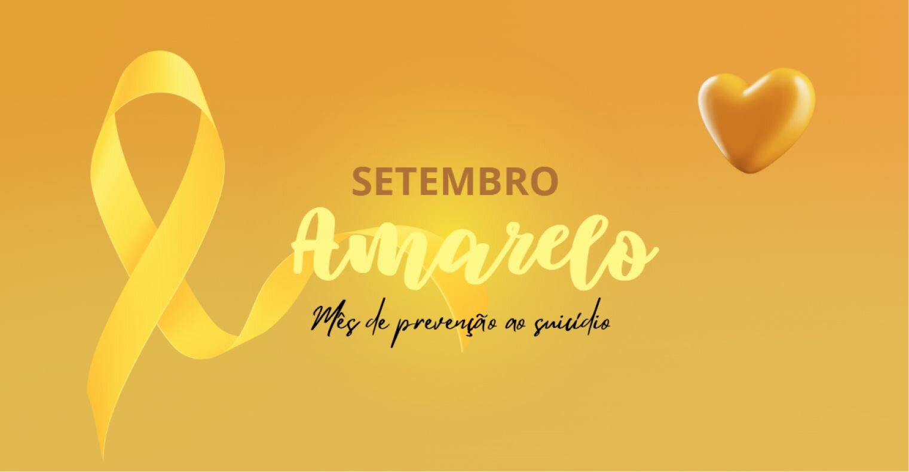

O que e o setembro amarelo⁉
O Setembro Amarelo é uma campanha nacional de conscientização sobre a
prevenção ao suicídio, realizada todos os anos durante o mês de setembro. Criada em 2015
no Brasil, a iniciativa é promovida pela Associação Brasileira de Psiquiatria (ABP) em
parceria com o Conselho Federal de Medicina (CFM), e tem como objetivo quebrar tabus, reduzir
o estigma e incentivar o diálogo sobre saúde mental.
Por que Setembro⁉
O dia 10 de setembro é reconhecido mundialmente como o Dia Internacional de Prevenção ao
Suicídio. Durante todo o mês, instituições, escolas, empresas e órgãos públicos se mobilizam
para sensibilizar a população e oferecer informações e apoio a quem precisa.
A importância da campanha

Problema de saúde pública.

700 mil pessoas morrem por suicídio todos os anos.

1 morte a cada 46 minutos.
A maioria dos casos pode ser evitada com apoio psicológico, acompanhamento médico e uma rede de acolhimento.
Como ajudar⁉
- Ouça sem julgamentos: muitas vezes, a pessoa só precisa ser acolhida.
- Ofereça apoio e companhia: pequenas atitudes podem fazer diferença.
- Incentive a busca por ajuda profissional: psicólogos, psiquiatras e grupos de apoio são fundamentais.
- Compartilhe informações seguras: evite conteúdos que romantizem ou incentivem o sofrimento.
Onde buscar ajuda⁉
Se você ou alguém que você conhece está passando por um momento difícil, não hesite em pedir ajuda.
- CVV-Centro de Valorização de Vida: atendimento gratuito e sigiloso 24 horas por dia pelo telefone 188 ou pelo site cvv.org.br.
- Unidades de saúde (SUS): atendimento psicológica e
psiquiátrico gratuito.
- UPAs e Hospitais em casos de emergência.
Como participar da campanha⁉
- Ilumine prédios e monumentos de amarelo.
- Promova palestras, rodas de conversa e ações educativas.
- Compartilhe conteúdos informativos nas redes sociais.
- Vista-se de amarelo e ajude a espalhar a mensagem de esperança.
Falar sobre saúde mental é um ato de
coragem e amor. O Setembro Amarelo nos lembra que a
vida importa e que ninguém precisa
enfrentar a dor sozinho. A prevenção começa com
informação, empatia e acolhimento.